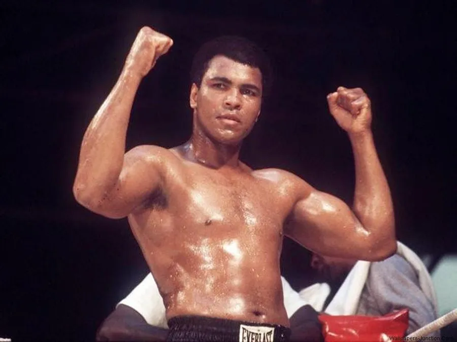
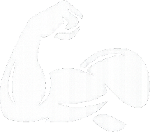
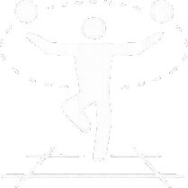
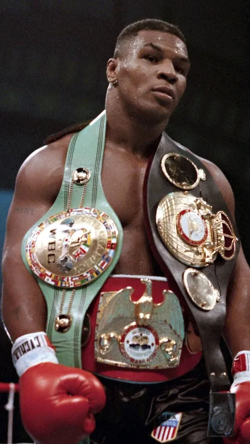

<!doctype html>
<html lang="en">
  <head>
    <meta charset="UTF-8" />
    <meta name="viewport" content="width=device-width, initial-scale=1.0" />
    <title>Boxing som sport</title>
    <link rel="stylesheet" href="css/style.css" />
    <link rel="stylesheet" href="css/layout.css" />
    <link rel="icon" href="imgs/favicon.png" />
  </head>
</html>
<body>
  <header>
    <nav class="grid4x1">
      <a href="index.html"></a>
      <a href="boxing som sport.html">Boxing som sport</a>
      <a href="kom i gang.html">Kom i gang</a>
      <a href="events.html">Events</a>
    </nav>
  </header>

  <section>
    <div>
      <div class="hero">
        
        <div class="hero-content-left">
          <h1>BOKSNING SOM SPORT</h1>
          <p class="text-box">Lær alt om boksning – fra grundlæggende regler og træning til de forskellige former for boksning og hvad sporten kræver både fysisk og mentalt.</p>
        </div>
      </div>
    </div>

    <section class="container">
      <div class="redsection">
        <div class="text-box">
        <div class="title-line"><h1>INTRO TIL BOKSNING</h1></div>
        <h2>Hvad er boksning?</h2>
        <p>Boksning er en kampsport, hvor to udøvere konkurrerer ved at slå med handsker inden for et sæt regler. Sporten kræver en kombination af teknik, styrke, hurtighed og strategi, og kampene foregår typisk i en ring opdelt i runder.</p>
        <p>Ud over selve kampene er boksning også en krævende træningsform. Træningen fokuserer på kondition, koordination, slagteknik og mental styrke, hvilket gør sporten både fysisk udfordrende og teknisk avanceret. Boksning dyrkes både som konkurrencesport og som motionsform af mennesker på alle niveauer.</p>
      </div>
    </div>
    </section>

    <section class="container2">
      <div class="title-line">
        <h1>TYPER AF BOKSNING</h1>
      </div>

      <div class="grid1-1">
        <div class="box" data-target="motionmodal">
          <h2>MOTIONSBOKSNING</h2>
          <p>Denne form handler primært om motion samt kardio og er ikke lige så teknisk</p>
        </div>

        <div class="box" data-target="kampmodal">
          <h2>TEKNISK BOKSNING</h2>
          <p>Denne form fokuserer på teknik og strategi og kræver en høj grad af fysisk og mental forberedelse</p>
        </div>
      </div>

      <div id="motionmodal" class="modal">
        <div class="modal-content">
          <span class="close">&times;</span>
          <h2>MOTIONSBOKSNING</h2>
          <h1>Hvad er motionsboksning?</h1>
          <p>
            Motionsboksning er en træningsform, der er inspireret af klassisk boksning, men uden fokus på kamp eller konkurrence. I stedet handler motionsboksning om at forbedre kondition, styrke og teknik gennem forskellige bokseinspirerede øvelser.
          </p>
          <p>Træningen foregår typisk uden egentlig kamp i ringen. I stedet arbejder man med slagkombinationer, sandsæk, skyggeboksning og fodarbejde. Målet er at få en effektiv træning, der både styrker kroppen og forbedrer udholdenheden.</p>

          <h2>Hvordan foregår en typisk træning?</h2>
          <p>En træning i motionsboksning består ofte af flere forskellige dele. Først starter man typisk med opvarmning, hvor kroppen gøres klar til træning gennem let konditionstræning og mobilitetsøvelser.</p>
          <p>Derefter arbejder man med tekniske øvelser som slagkombinationer, skyggeboksning, træning på sandsæk og fodarbejde. Mange hold inkluderer også styrke- og konditionsøvelser som armbøjninger, maveøvelser, burpees eller intervaltræning.</p>
          <p>Det gør motionsboksning til en meget alsidig træning, hvor hele kroppen bliver aktiveret.</p>

          <h2>Hvad er fordelene ved motionsboksning?</h2>
          <p>Motionsboksning har mange fordele, både fysisk og mentalt. Træningen forbedrer kondition og udholdenhed, styrker kroppen og træner koordination og balance. Samtidig kan det være en effektiv måde at tabe sig eller holde vægten på.</p>
          <p>Mentalt kan motionsboksning også have en positiv effekt. Mange oplever, at træningen hjælper med at reducere stress, forbedre fokus og give mere energi i hverdagen.</p>

          <h2>Hvem er motionsboksning for?</h2>
          <p>Motionsboksning er for næsten alle, og man behøver ikke have erfaring med boksning eller kampsport for at begynde. Træningen kan tilpasses forskellige niveauer, så både begyndere og mere erfarne motionister kan være med.</p>
          <p>Det er især populært blandt personer, der ønsker en anderledes og mere dynamisk træningsform end traditionel fitness.</p>

          <h2>Motionsboksning vs. traditionel boksning</h2>
          <p>Den største forskel mellem motionsboksning og traditionel boksning er, at motionsboksning ikke fokuserer på kampe. I traditionel boksning træner man ofte med henblik på sparring og konkurrencer.</p>
          <p>I motionsboksning handler det derimod om træning og motion. Derfor er der typisk mindre fokus på kontakt og mere fokus på teknik, kondition og styrke.</p>

          <h2>Hvor kan man dyrke motionsboksning?</h2>
          <p>Motionsboksning tilbydes i mange fitnesscentre og bokseklubber. Ofte foregår træningen på hold, hvor en træner guider deltagerne gennem forskellige øvelser og teknikker.</p>
          <p>Nogle steder kan man også træne individuelt på sandsæk eller med en træningspartner. Uanset formen er motionsboksning en effektiv måde at holde sig i form på og samtidig lære elementer fra boksningens verden.</p>
        </div>
      </div>

      <div id="kampmodal" class="modal">
        <div class="modal-content">
          <span class="close">&times;</span>
          <h2 class="center">TEKNISK BOKSNING</h2>
          <h2>Hvad er teknisk boksning?</h2>
          <p>
            Teknisk boksning er en form for boksetræning, hvor fokus ligger på teknik, præcision og forståelse af boksningens grundlæggende elementer. I modsætning til motionsboksning, hvor hovedmålet ofte er kondition og træning, handler teknisk
            boksning om at lære selve sporten og udvikle de færdigheder, der kræves for at bokse korrekt.
          </p>
          <p>Træningen fokuserer på at lære de rigtige slag, korrekt fodarbejde, balance og timing. Målet er at opbygge en solid teknisk base, som gør det muligt at bokse effektivt og kontrolleret.</p>

          <h2>Hvordan foregår en typisk træning?</h2>
          <p>En træning i teknisk boksning starter ofte med opvarmning for at gøre kroppen klar til de tekniske øvelser. Derefter arbejder man med forskellige tekniske elementer af boksning, ofte med stor fokus på korrekt udførelse.</p>
          <p>Typiske øvelser kan være skyggeboksning, hvor man øver slagkombinationer og bevægelser uden modstander, træning på sandsæk, samt øvelser hvor man arbejder sammen med en partner eller træner.</p>
          <p>Fodarbejde er også en vigtig del af træningen. Bokseren lærer at bevæge sig hurtigt og balanceret rundt i ringen, samtidig med at man kan angribe og forsvare sig effektivt.</p>

          <h2>Hvad lærer man i teknisk boksning?</h2>
          <p>I teknisk boksning lærer man blandt andet de grundlæggende slag i boksning, såsom jab, cross, hook og uppercut. Man arbejder også med forsvarsteknikker som parader, blokeringer og undvigelser.</p>
          <p>Derudover træner man timing, afstand og reaktionsevne. Disse færdigheder er afgørende for at kunne bokse effektivt og kontrollere situationen i ringen.</p>

          <h2>Hvem er teknisk boksning for?</h2>
          <p>
            Teknisk boksning er for personer, der ønsker at lære selve sporten boksning og blive bedre til teknikken bag slag, bevægelse og strategi. Det kan være både begyndere, der vil lære de rigtige grundprincipper, og mere erfarne udøvere, der
            ønsker at forbedre deres færdigheder.
          </p>
          <p>Træningen er også velegnet for dem, der overvejer at gå videre til sparring eller kamp på et senere tidspunkt, da en god teknik er afgørende for at kunne bokse sikkert og effektivt.</p>

          <h2>Teknisk boksning vs. motionsboksning</h2>
          <p>Forskellen mellem teknisk boksning og motionsboksning ligger primært i fokusset. I motionsboksning handler træningen ofte om fitness, kondition og generel motion. I teknisk boksning er fokus derimod på at lære boksning som sport.</p>
          <p>Der arbejdes mere detaljeret med teknik, slagkombinationer, bevægelse og strategi. Derfor er teknisk boksning ofte et skridt tættere på den klassiske form for boksning.</p>
        </div>
      </div>

      <div class="divider"></div>
      <h1 class="title-line">DET MENTALE</h1>

      <div class="mental-section">
        

        <div class="line"></div>

        <div class="top">
          <h1>Egenskaber</h1>
          <ul>
            <h2 class="margin-top">Disciplin</h2>
            <p>En bokser skal følge en streng træningsrutine, holde en kontrolleret kost, og møde op til træning hver dag, også når motivationen mangler.</p>

            <h2 class="margin-top">Fokus</h2>
            <p>I ringen handler det om at kunne holde koncentrationen gennem hele kampen, reagere hurtigt og træffe de rigtige beslutninger under pres.</p>

            <h2 class="margin-top">Udholdenhed</h2>
            <p>Boksning kræver både fysisk og mental udholdenhed. En bokser skal kunne bevare styke, tempo og klarhed selv i de sidste runder af en hård kamp.</p>
         </ul>
        </div>
      </div>
    </section>

    <section class="container2">
    
    <div class="margin-top2">
        </div>
      <h1 class="title-line">DET FYSISKE</h1>
      <div class="grid4x1">
        <div class="box">
            
          <h2>Kondition</h2>
          <p>Kondition er vigtig for at kunne opretholde en høj intensitet gennem hele kampen.</p>
        </div>

        <div class="box">
            
          <h2>Hastighed</h2>
          <p>Hastighed er vigtig for at kunne udføre hurtige bevægelser og reaktioner i ringen.</p>
        </div>

        <div class="box">
            
          <h2>Styrke</h2>
          <p>Styrke er afgørende for at kunne udføre kraftfulde slag og bevæge sig effektivt i ringen.</p>
        </div>

        <div class="box">
            
          <h2>Koordination</h2>
          <p>Koordination er nødvendig for at kunne kombinere slag, bevægelser og forsvar effektivt.</p>
        </div>
      </div>
    </section>


    <section class="container2">
        <div class="divider"></div>
        <h1 class="title-line">LIVERT SOM PROFESSIONEL BOKSER</h1>
<div class="mental-section">
        

        <div class="line"></div>

        <div class="top">
          <h1>Daglig routine</h1>
          <p>En professionel bokser følger en struktureret hverdag, især under en 'fight camp'. En fight camp er perioden op til en kamp, hvor træningen intensiveres for at nå topform. Denne periode varer typisk mellem 6 og 12 uger og kræver både fysisk og mental disciplin.</p>
          <ul>
            <h2 class="margin-top">Morgenløb</h2>
            <p>Dagen starter ofte med et løb for at opbygge kondition og udholdenhed. Distancen kan variere, men formålet er at forbedre bokserens stamina og evne til at holde tempo gennem flere runder.</p>

            <h2 class="margin-top">Morgenmad & restitution</h2>
            <p>Efter morgenløb og træning følger en balanceret morgenmad, som hjælper med genopbygning og energi til resten af dagen. Restitution er lige så vigtig som træning, og inkluderer hvile, vand og ernæring.</p>

            <h2 class="margin-top">Teknisk træning</h2>
            <p>Teknisk træning er afgørende for at udvikle de korrekte bevægelser og teknikker i ringen. Dette inkluderer pæne stående, slag og forsvar.</p>

            <h2 class="margin-top">Sparring</h2>
            <p>Sparring er kontrollerede træningskampe mod en partner. Det hjælper bokseren med at teste teknik, strategi og reaktionsevne i en mere realistisk kampsituation.</p>

            <h2 class="margin-top">Styrke og fysisk træning</h2>
            <p>Eksplosive øvelser, sandsæk, core-træning og styrke.</p>

            <h2 class="margin-top">Kost og vægtkontrol</h2>
            <p>Planlagt kost gennem hele dagen for at holde energi og vægtklasse.</p>

            <h2 class="margin-top">Aftenrestitution</h2>
            <p>Udstrækning, let aktivitet eller hvile for at lade kroppen restituere.</p>
          </ul>
        </div>
      </div>

    </section>
    
    </section>

    <section class="container2">
      <a class="box" href="kom i gang.html">
        <h1>DRØMMER DU OM AT STARTE?</h1>
        <p>
          En af de største forhindringer for at starte med boksning er ofte frygten for det ukendte. Mange mennesker har en idé om, at boksning kun handler om vold og kamp, og det kan være skræmmende at tage det første skridt ind i en bokseklub eller
          træningscenter.
        </p>
        <h3>Vi vil hjælpe dig med at komme godt og trygt i gang</h3>
        <h2>TRYK HER FOR AT KOMME IGANG</h2>
      </a>
    </section>
  </section>

  <footer>&copy 2026 Boxing Guide.</footer>

  <script>
    const boxes = document.querySelectorAll(".box");

    boxes.forEach((box) => {
      box.addEventListener("click", () => {
        const target = box.dataset.target;
        document.getElementById(target).style.display = "flex";
      });
    });

    const closes = document.querySelectorAll(".close");

    closes.forEach((btn) => {
      btn.addEventListener("click", () => {
        btn.closest(".modal").style.display = "none";
      });
    });
  </script>
</body>
